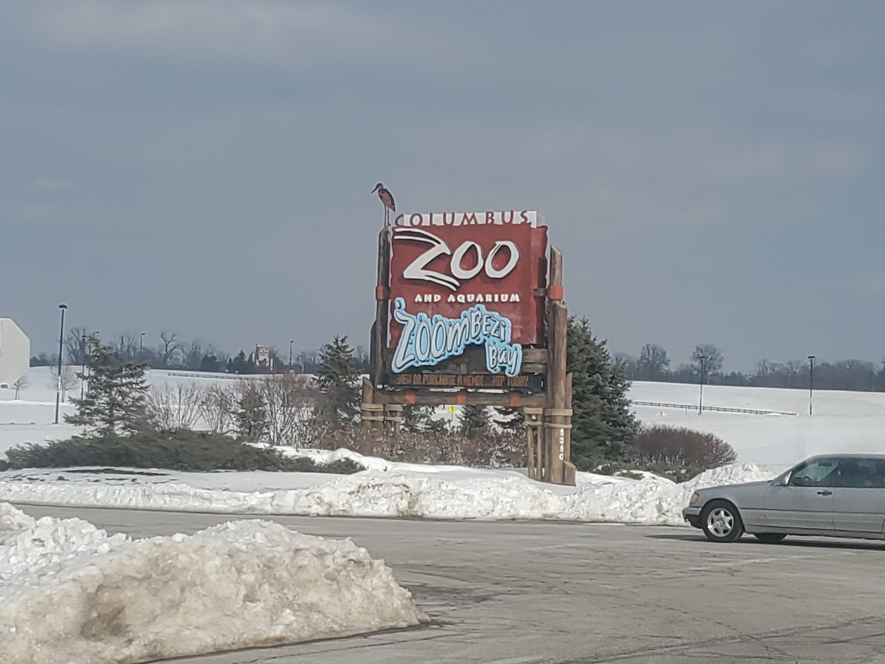
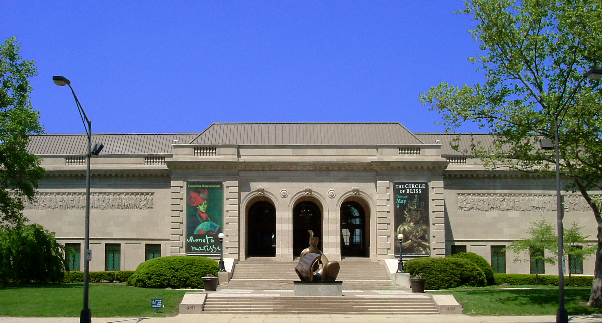
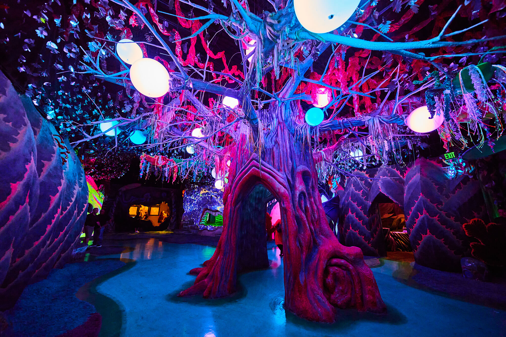

Local Attractions
Cosi
Cosi or formally known as the (Center of Science and Industry) is a big attraction in Columbus. People will go there for school trips or to just enjoy time with friends and family.
{kind=link}
Zoombezi Bay
Zoombezi Bay is both an amusement and water park. There are various things to do here. They have 15 different water slides and different types of pools. They even have a lazy river!!! The tickets cost around $34.99 for adults and $31.99 for kids.
{kind=link}
CMOA
The Columbus Museum Of Art encourages that their visitors try new things, so along with having beautiful art they also host activities. There is a lot to do in the Museum and there will be more to come. We recommend that you try going there while you're down here. This will be a very enjoyable experience.
{kind=link}
OtherWorld
Other World is a big immersive art museum with over 40 different scenes to explore. There are multiple different art scenes, playgrounds, and even secrets yet to be explored by you. When you stop by make sure to check out this wonderfull experience with your family and also friends alike.
Columbus Blue Jackets
The Columbus Blue Jackets is one of our hockey teams. They rank number 8th in the metropolitan. The Blue Jackets have a win-loss record of 27 to 43. It's not the best but given time the Blue Jackets could go huge in the state, or even the nation. Columbus has been producing various teams but the BJ's have a really good chance of doing something great. So maybe stop by and watch a couple games.

National Veterans Memorial and Museum
The National Veterans Memorial and Museum is the only museum in America that honors from all time. Every branch and member. This museum tells the stories from our Veterans to all our visitors. They care dearly for both Veterans and the people who put in the effort to show up and witness this beautiful spectacle. Please make sure to stop by while you're in the area. They are located at 300 W Broad St, Columbus, OH 43215.